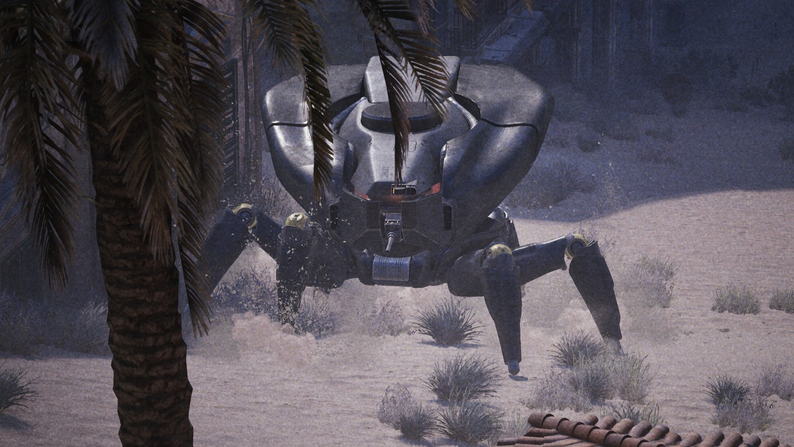

SPERANZA "Stop trying to hide from the ARC drones behind that rusty shipping container." Explains researcher "Lizzy", Speranza's leading ARC Specialist; "The ARC drone flying above you already sees you and knows EXACTLY where you are. It is only whistling and ignoring you because it thinks your attempt at camouflage is pathetic."
A bombshell report circulated today, revealing that the iconic ARC whistle, long believed to be a sophisticated sensor scan, is actually a form of mockery directed at Raiders who attempt to hide from the drones. "The data is clear" Lizzy affirms, "If you're crouched behind a knee-high rock wearing bright orange armor, they don't whistle because they found you. They whistle because they can't believe you actually think that’s working. It’s synthesized pity."
The revelation has had severe repercussions across the Raider community. Many veterans who pride themselves on their stealth capabilities are now reportedly suffering from severe performance anxiety topside.
A bastion staring menacingly at one of our Journalists.
"I used to feel terror when I heard that sound," said John "Snake", a ten-year veteran currently hiding under his bunk. "Now? I just feel embarrassed. Last week a ARC Hornet hovered over a bush where I had been hiding for fifteen minutes, just whistling a tune that sounded suspiciously like a funeral march. It didn't even shoot; It just wanted me to know that they knew. The disrespect hurts worse than the bullet wounds. Also, I almost missed the extraction window, which would've been a much bigger problem than a Hornet thinking I'm an idiot."
The Speranza Council has advised Raiders to ignore the findings and continue hiding, noting that "being judged by a flying toaster is still preferable to being disintegrated by one."